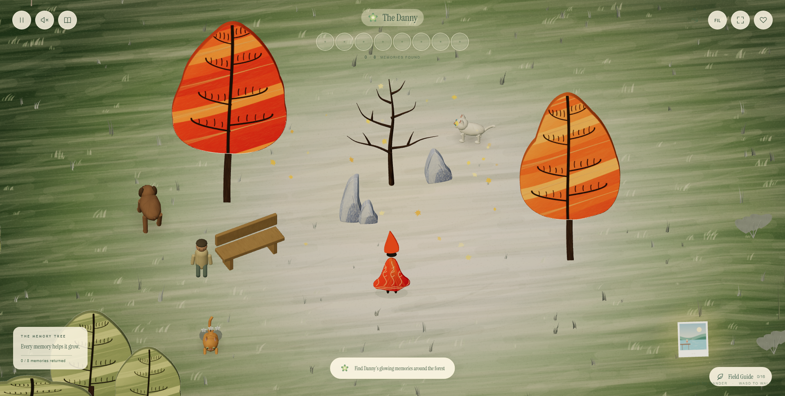
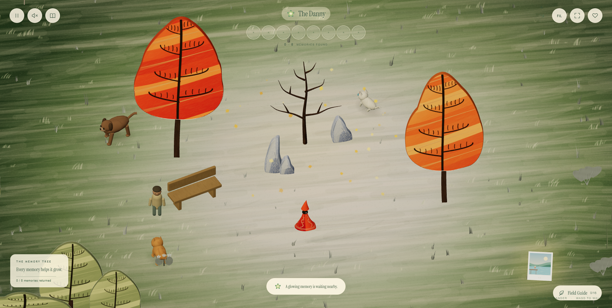
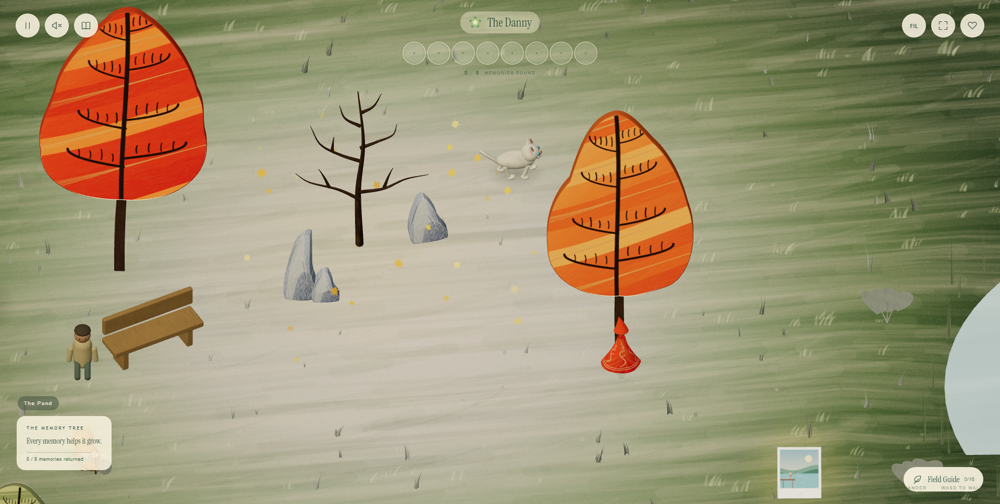
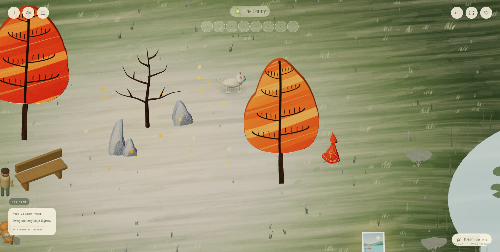
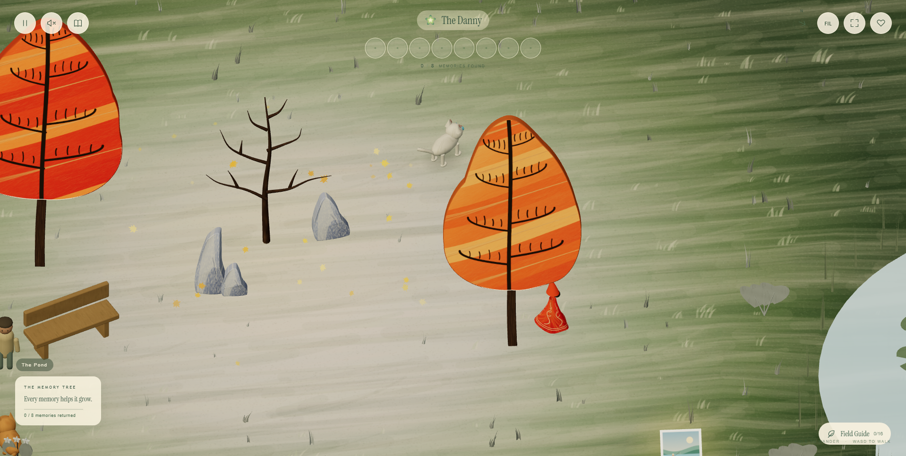
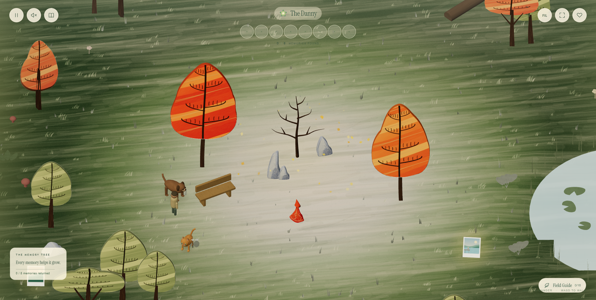

The Danny — Character Motion
Direction changes, cloth inertia, trunk contact and a stable camera. Open the updated game · Read the measurements
Reference: turning sequence at 8–10.5 seconds.
Implementation: idle, travel, three direction changes and settling. Fixed simulation timing at 12 FPS.
A closer view of the recorded character animation.
Before and after

Before — camera-facing flat character and timer-driven bob.

After — smaller silhouette, directional volume and grounded movement.
Contact, depth and camera

Trunk blocks displacement; gait settles instead of walking in place.

Diagonal input preserves tangential movement.

Walkable canopy and normal depth overlap.

Camera pulls back; world orientation stays fixed.
The dress remains rounder than the reference and keeps the original embroidery. The approved memorial clearing is preserved. See the report for validation and remaining visual differences.